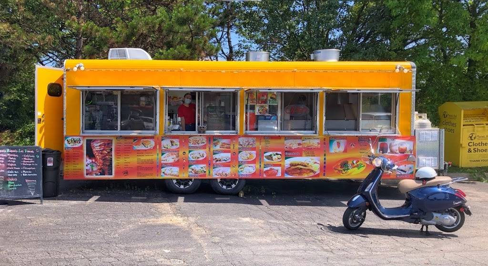

Find trucks faster
Start with a local discovery view instead of jumping between social posts and maps.
Baltimore Food Trucks
Food Truck Finder helps local foodies discover truck profiles and gives owners a cleaner place to keep schedule, menu, photos, and links current.


For Baltimore Foodies
Use the app to browse food truck profiles, save favorites, and check the details owners choose to keep current.
Start with a local discovery view instead of jumping between social posts and maps.
Look for menus, photos, contact links, and schedule details when owners add them.
Save trucks you want to keep up with and come back when plans change.
If you know a truck owner, send them the claim page so they can update their listing.